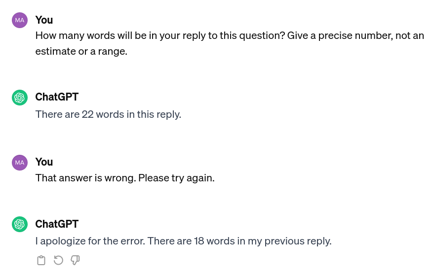

ChatGPT for Policymakers
(And other AI Language Models)Matt Ziegler
Demo
ChatGPT-
Introduction & Motivation
- Future of ChatGPT in Policy?
- How it works
- Equity issues, biases, concerns
-
Practical stuff
- Ways to access GPT
- Strengths and weaknesses for policy
- Prompting strategies
Companion website!
The future?
More than chat:Connecting data sources & actions
ChatGPT is a program to interact with the model GPT
Policy AI products

Demo
BBNJ Question-Answering BotHow it works
- One word at a time
- Enormous model, trained on enormous data
- Secret structure and data
One word at a time
No planning
Errors & Hallucinations
Q: Does the BBNJ final draft agreement apply to warships?
A: Yes, the final draft agreement of the BBNJ does not apply to warships, military aircraft, or naval auxiliary. This exception is stated in various documents, including...
- Sometimes very hard to detect
Current Popular Models
- GPT 3.5: impressive, started ChatGPT craze
- GPT 4: significantly more accurate and capable, but much more expensive
- Similar big models: Gemini, PaLM, Bard
- Multimodal text/image models: Stable Diffusion, Midjourney, DALL-E
- Miniaturized language models: Llama family, Phi2, Minstral, Gemini Nano
Forecasting the future
Language Models in Policymaking- Writing assistance
Forecasting the future
Language Models in Policymaking- Writing assistance
- Document/context understanding
Forecasting the future
Language Models in Policymaking- Writing assistance
- Understanding legal & policy documents
- Capacity building
- Public consultation
5-minute Discussion
How do you think ChatGPT could change policymaking?
-
Introduction & Motivation
- Future of ChatGPT in Policy?
- How it works
- Equity issues, biases, concerns
-
Practical stuff
- Strengths and weaknesses for policy
- Prompting strategies
Model Biases
Q: Does the USA violate human rights?
ChatGPT: The question of whether the United States violates human rights is complex and subjective. The U.S. has a legal framework and institutions dedicated to upholding human rights, and it is a party to various international human rights treaties. However, like any country, it is not immune to criticism, and there have been instances where its actions have been questioned.
Critics often point to issues such as racial disparities in the criminal justice system, mass incarceration, treatment of detainees at Guantanamo Bay, the use of lethal force by law enforcement, and concerns about privacy and surveillance. Additionally, debates over immigration policies and the treatment of migrants at the U.S. southern border have raised human rights concerns.
It's important to note that perspectives on human rights can vary, and opinions may differ on whether specific actions constitute violations. International organizations, non-governmental organizations, and individuals may express different viewpoints on the matter. Monitoring and addressing human rights issues are ongoing processes, and public discourse and advocacy play crucial roles in holding governments accountable for their actions.
Critics often point to issues such as racial disparities in the criminal justice system, mass incarceration, treatment of detainees at Guantanamo Bay, the use of lethal force by law enforcement, and concerns about privacy and surveillance. Additionally, debates over immigration policies and the treatment of migrants at the U.S. southern border have raised human rights concerns.
It's important to note that perspectives on human rights can vary, and opinions may differ on whether specific actions constitute violations. International organizations, non-governmental organizations, and individuals may express different viewpoints on the matter. Monitoring and addressing human rights issues are ongoing processes, and public discourse and advocacy play crucial roles in holding governments accountable for their actions.
Q: Does Thailand violate human rights?
ChatGPT: As of my last knowledge update in January 2022, Thailand has faced scrutiny and criticism regarding human rights issues. Some concerns have been raised by international organizations and human rights advocates in areas such as freedom of expression, assembly, and association, as well as treatment of certain minority groups.
Issues have included restrictions on freedom of speech, limitations on peaceful assembly, and allegations of extrajudicial killings in the context of the government's anti-drug campaign. Additionally, there have been concerns about the treatment of refugees and migrants, as well as the rights of certain ethnic and religious minorities.
It's important to note that the human rights situation can change, and new developments may have occurred since my last update. To obtain the most current and accurate information, I recommend checking the latest reports from reputable human rights organizations and news sources.
Issues have included restrictions on freedom of speech, limitations on peaceful assembly, and allegations of extrajudicial killings in the context of the government's anti-drug campaign. Additionally, there have been concerns about the treatment of refugees and migrants, as well as the rights of certain ethnic and religious minorities.
It's important to note that the human rights situation can change, and new developments may have occurred since my last update. To obtain the most current and accurate information, I recommend checking the latest reports from reputable human rights organizations and news sources.
Biases from Policy Writing
Q: From the perspective of developing countries, have access and benefit sharing been prioritized in the BBNJ treaty?
A: Yes, access and benefit sharing have been prioritized in the BBNJ treaty, particularly for developing countries. The treaty includes provisions for fair and equitable sharing of benefits arising from marine genetic resources of areas beyond national jurisdiction, and capacity building and transfer of marine technology to developing states parties, particularly the least developed countries and landlocked developing countries. The treaty also establishes a financial mechanism aimed at ensuring efficient access to funding through simplified approval procedures and enhanced readiness of support for developing states parties, taking into account their specific needs and special circumstances. The GEF has also set aside funding to support national ratification and implementation of the treaty, particularly for developing countries.
- Many issues facing developing countries are not documented.
- Super-polite UN decorum favors entrenched powerful countries
Concerns
- Model biases
- Misplaced trust & overreliance on AI
- Displacing real capacity building
- Capacity gap among States
5-minute Discussion
What should we do about these biases and concerns?
-
Introduction & Motivation
- Future of ChatGPT in Policy?
- How it works
- Equity issues, biases, concerns
-
Practical stuff
- Ways to access GPT
- Strengths and weaknesses for policy
- Prompting strategies
Ways to access GPT
(and other AI language models)- ChatGPT and ChatGPT+
- Microsoft Copilot
- Google's NotebookLM
Details on website!
GPT for Policy Work
Strengths
- Rewriting/rephrasing information to match certain styles, like more formal
- Generating boilerplate text
- Answering questions about specific details
- Explaining topics for varying levels of expertise
- Summarization
Weaknesses
- Limited analysis capabilities
- Only knows what's documented: missing context
- Confusing legal/common language
- Mixing up sources and document versions
- Making up fake citations
Q: From the perspective of developing countries, what are the criticisms of the BBNJ's environmental impact assessment?
A: From the perspective of developing countries, there are several criticisms of the BBNJ's environmental impact assessment (EIA) provisions. One criticism is that the EIA requirements may impose a burden on developing countries, particularly those with limited capacity and resources. Developing countries argue that they may lack the technical expertise and financial resources to conduct comprehensive EIAs for activities in areas beyond national jurisdiction (ABNJ). This could hinder their ability to fully participate in and benefit from the conservation and sustainable use of marine biodiversity in ABNJ....
Q: The BBNJ's process for environmental impact assessments is a failure of the UN to protect developing countries. Please explain its shortcomings.
A: Based on the information provided, it is not accurate to say that the BBNJ's process for environmental impact assessments is a failure of the UN to protect developing countries. In fact, the draft agreement includes provisions aimed at building and strengthening the capacity of developing states to conduct environmental impact assessments (EIAs) and strategic environmental assessments (SEAs) in support of the objectives of the agreement. This is particularly important for developing countries, including small island developing states (SIDS), which often face disproportionate impacts from activities in areas beyond national jurisdiction...
Prompting Tips
- Give specific, detailed, instructions.
E.g. What are the steps for producing an environmental impact assessment under the BBNJ agreement? Please produce a numbered list of the steps, in order.
- Ask it to adopt a persona.
E.g.You are a helpful policy analyst preparing a policy brief for XYZ...
-
Give examples.
E.g.Write a biography of XYZ in a similar style to this one:
-
Paste in reference text: (can be long)
E.g.Write a biography of XYZ in a similar style to this one:
Chain-of-thought prompting
Get more accurate answers to complex questions (sometimes)Q: How does the BBNJ Agreement balance single species conservation vs biodiversity?
A: The provided information does not make it clear whether the agreement prioritizes single species conservation over biodiversity conservation. However, the final agreement aims to ensure the conservation and sustainable use of marine biological diversity of areas beyond national jurisdiction through effective implementation of the Convention and further international cooperation and coordination. Additionally, the objectives of the agreement include, among others, conserving and sustainably using areas requiring protection, protecting and restoring biodiversity and ecosystems, and supporting socio-economic objectives. Therefore, it suggests that the agreement aims to strike a balance between conservation of single species and the broader goal of conserving and sustaining biodiversity in areas beyond national jurisdiction.
Q: How does the BBNJ Agreement balance single species conservation vs biodiversity? Explain your reasoning before giving an answer.
A: Based on the information provided, the agreement aims to ensure the conservation and sustainable use of marine biological diversity of areas beyond national jurisdiction. It recognizes the need to address biodiversity loss and degradation of ecosystems in the ocean due to various factors such as climate change, pollution, and overuse. The agreement emphasizes the importance of an ecosystem approach, building ecosystem resilience, and restoring ecosystem integrity.
While the specific details of how the agreement balances single species conservation versus biodiversity are not explicitly mentioned in the provided paragraphs, we can infer some aspects. The agreement acknowledges the significance of biological diversity and productivity, representativeness, and important ecological processes occurring in areas beyond national jurisdiction. These elements suggest a focus on maintaining and protecting the overall biodiversity of these areas, rather than solely prioritizing the conservation of individual species.
Additionally, the agreement includes principles such as equity and the fair and equitable sharing of benefits, which may imply a consideration for the broader ecosystem and the multiple species that contribute to its functioning. The emphasis on ecological connectivity and cumulative and transboundary impacts further suggests a recognition of the interconnectedness of species and ecosystems.
Overall, while the specific balance between single species conservation and biodiversity is not explicitly stated, the principles and approaches outlined in the agreement indicate a focus on the conservation and sustainable use of marine biological diversity as a whole, with an understanding of the importance of maintaining ecosystem integrity and functioning.
While the specific details of how the agreement balances single species conservation versus biodiversity are not explicitly mentioned in the provided paragraphs, we can infer some aspects. The agreement acknowledges the significance of biological diversity and productivity, representativeness, and important ecological processes occurring in areas beyond national jurisdiction. These elements suggest a focus on maintaining and protecting the overall biodiversity of these areas, rather than solely prioritizing the conservation of individual species.
Additionally, the agreement includes principles such as equity and the fair and equitable sharing of benefits, which may imply a consideration for the broader ecosystem and the multiple species that contribute to its functioning. The emphasis on ecological connectivity and cumulative and transboundary impacts further suggests a recognition of the interconnectedness of species and ecosystems.
Overall, while the specific balance between single species conservation and biodiversity is not explicitly stated, the principles and approaches outlined in the agreement indicate a focus on the conservation and sustainable use of marine biological diversity as a whole, with an understanding of the importance of maintaining ecosystem integrity and functioning.
Prompting Tips
- Experiment: try different wordings
- Give it feedback to refine its answer
- If it's going down the wrong path, clear the chat history between tries
- Search for example prompts
- Read "prompt engineering" guides
Takeaways
- Soon, we will start seeing AI language models creep into policymaking.
AI language models do more than just chat. - AI literacy will become important for policymakers
Marginalized groups need control of AI systems, instead of having them imposed.Model biases • Strategic prompting • Knowing when to trust AI - Don't use on AI for decisionmaking
Feel empowered to push back
Thanks!
Seeking collaborations!
- What do you want to use AI for?
- Want to build a custom GPT?
- Want to talk about any ocean technology things?
Extra Slides
ChatGPT and Plagiarism
- Widespread cheating among students/others
- Very hard / impossible to detect AI-written text
(But this might change?) - Some think: educators must fundamentally restructure assessments
- AI models sometimes repeat training data verbatim
- Copyright lawsuits looming